科技爱好者周刊（第 336 期）：面对 AI，互联网正在衰落
这里记录每周值得分享的科技内容，周五发布。
本杂志 开源，欢迎 投稿。另有 《谁在招人》 服务，发布程序员招聘信息。合作请 邮件联系（yifeng.ruan@gmail.com）。
封面图
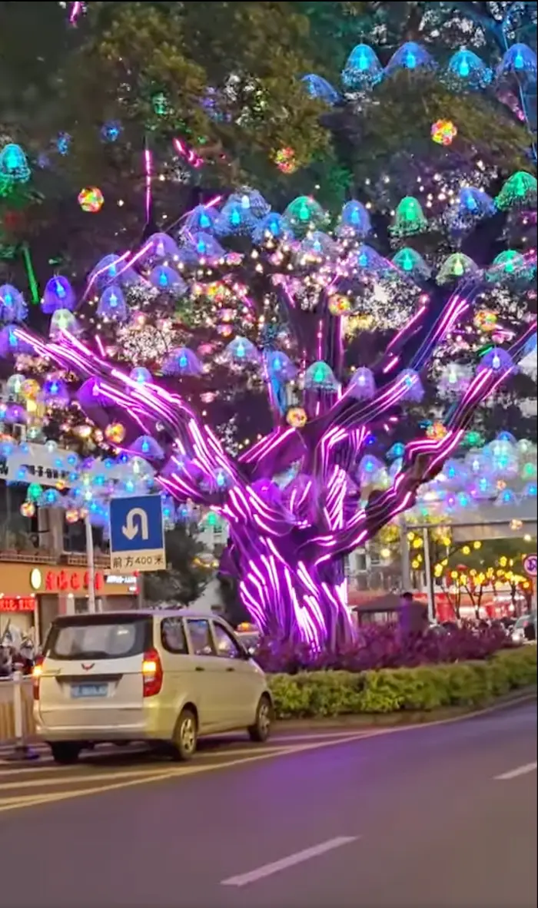
漳州钟法路的大榕树新春彩灯。（via）
面对 AI，互联网正在衰落
这一段日子，新闻焦点全是 DeepSeek，其他重要事件就不显眼了。
我说的重要事件是，1 月 23 日，就在 DeepSeek R1 模型发布三天后，OpenAI 公司推出了一个新的 AI 工具，叫做 Operator（操作员）。
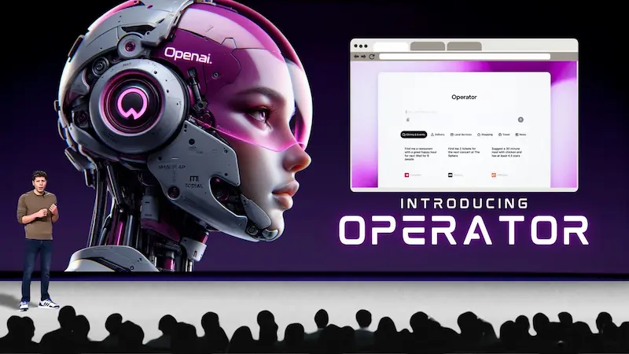
我认为，这个工具可能预示着，传统互联网的最终衰落。
Operator 与其他 AI 产品截然不同。它不是一个内容生成工具，而是一个自动化工具，能够自动操作网页。
OpenAI 公司展示了一个例子，你对 AI 说，去旅游网站 Tripadvisor 预定评分最高的 ” 罗马一日游 “，AI 就自动帮你预定了，你根本不必离开当前窗口（下图）。
大家想一想，这意味着什么？
以前，你要预订一个旅游产品，是这样操作的：首先去谷歌搜索 Tripadvisor 网址，然后访问该网站，找到发布 ” 罗马一日游 ” 的所有旅游社，最终预订评分最高的那一家。
现在，AI 把这些中间步骤都取代了，你不再需要访问谷歌、Tripadvisor 和旅行社的产品页了，AI 帮你自动访问了。
用户的体验就是，我不需要其他网站了，只要有 AI 就够了。
AI 越是强大，其他网站的重要性就越低。
如果未来的 AI 强大到无所不能，那么你有可能不需要访问任何网站，只要对着 AI 提出要求，它都可以帮你操作。
你可以让 AI 帮你买东西、叫外卖、投资证券、播放视频，而不再需要去电商网站、外卖网站、券商网站、视频网站了。
这意味着，传统的、以网站形式存在的互联网将走向消亡。
我看到，一个老外 预测，以后的商业模式可能是，各种服务商不直接面对用户，也不搭建网站展示自己了，而是把服务卖给 AI 公司，或者提供 API 让 AI 付费访问。
互联网将不再面向用户，而是面向 AI，因为消费者最终可能只使用 AI。未来的互联网，可能会有一个结构化数据层，取代现在的网站，专门供 AI 使用。
科技动态
1、2025年的气温
缅因大学的气候变化研究所，有一个网站，展示过去 50 年的全球平均气温图。
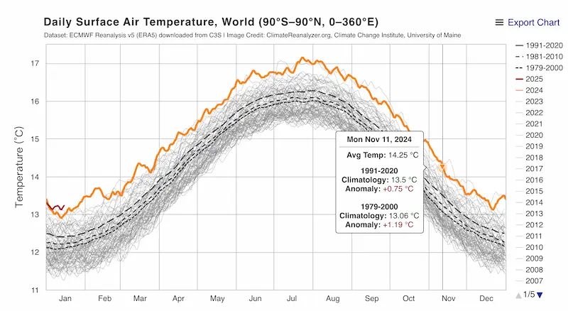
可以看到，上图的最上方是一根橘黄色曲线，这就是 2024 年的全球平均气温。
2024 年是有气象记录以来最热的一年，所以它的曲线在其他年份的上方。
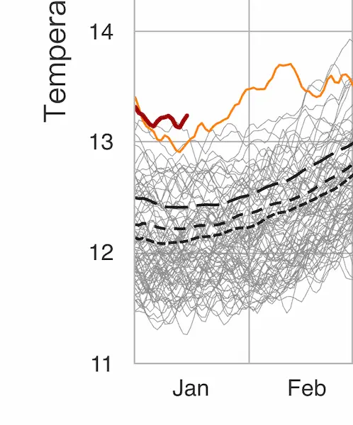
但是，如果你仔细看这张图的左下角（上图），会发现有一根咖啡色的短曲线，在橘黄色曲线的上方，那是 2025 年的实时气温曲线。
也就是说，2025 年 1 月份的全球气温已经超过了 2024 年 1 月，这很可能预示，2025 年比 2024 年更热。
2、域名错误
瑞士巴塞尔在发给市民的报税信函中，误将报税网址 esteuern.bs.ch，写成 esteuern.bs（下图）。
工作人员漏掉了瑞士的国别域名 .ch，于是巴塞尔的市级域名 bs.ch，变成了加勒比海国家巴哈马的域名 .bs。
等到发现时，信函都已经发出去了。如果再发更正邮件就太贵了，工作人员索性直接注册了这个巴哈马域名。
于是，巴塞尔市民今年就在一个巴哈马域名报税了。
3、显卡的空调冷却
B 站最近出现了一个热门视频，网友用空调的室外机，给英伟达新上市的 5090 显卡散热，
不过，他们没有用到空调压缩机，只用到了室外机的风扇和散热管，就相当于外接了一个巨型散热器。
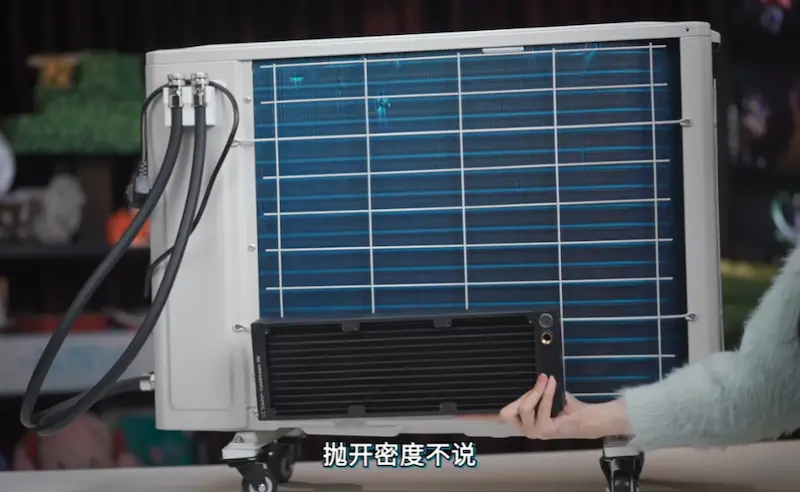
机箱内部的热量，通过管道流向散热空调，冷却后再传回机箱。
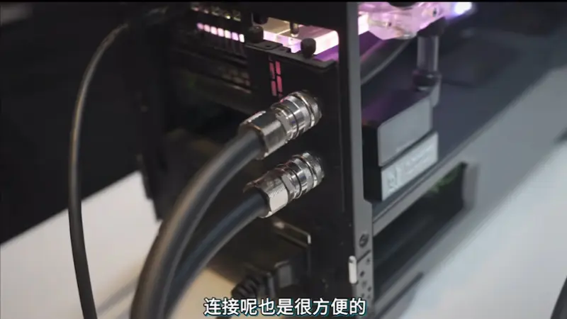
根据现场测试，散热效果十分显著。
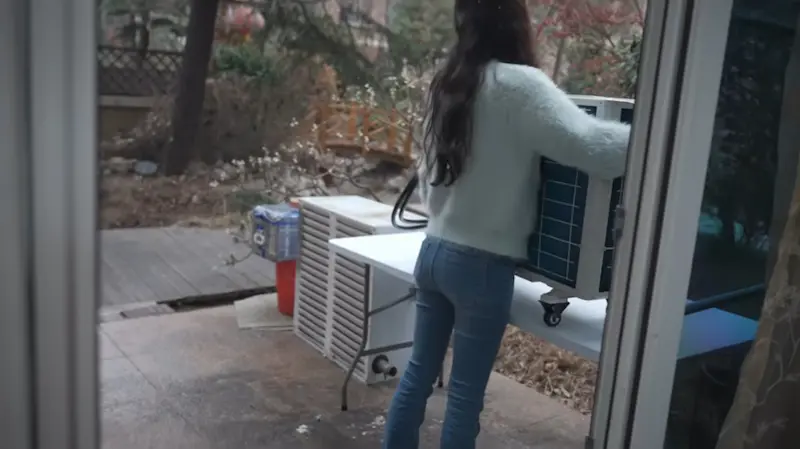
烤机之前，GPU 显存温度 2 度，核心温度 4 度。功耗拉到 1000W，烤机 40 分钟后，GPU 温度依然低于 30 度。
4、其他
（1）世界第一架 民间制造的超音速客机，试飞时成功打破音障。
（2）谷歌宣称，通过 AI 检测，删除了应用商店 236 万个违规应用，封禁了 15.8 万个开发者账户。以后，审核不需要规则了，都交给 AI。
（3）Opera Air 浏览器发布，会在浏览时播放背景音乐，以及指导用户进行身体运动。这是不是一个信号，浏览器本身越来越难有大的技术创新了。
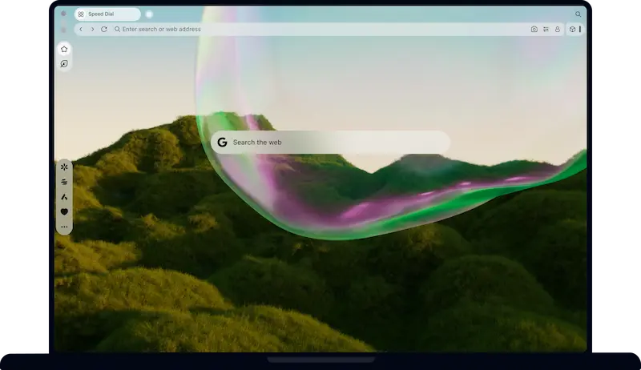
文章
1、DeepSeek R1 的推理实例（英文）
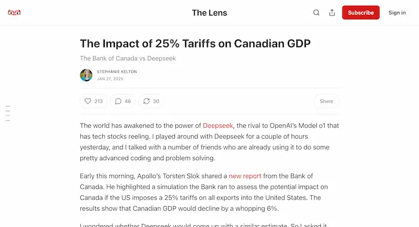
DeepSeek R1 会显示推理过程。作者问它，美国对加拿大征收 25% 的关税，对加拿大 GDP 有何影响。
DeepSeek R1 的回答过程，简直就是一篇经济学论文，而且只 ” 思考 ” 了 12 秒。
2、Canva 如何建立图像搜索（英文）
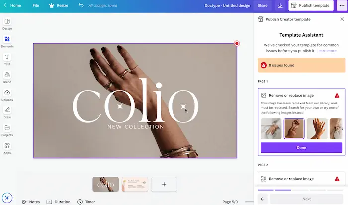
本文介绍 Canva 公司如何使用向量嵌入，建立相似图片搜索。
下面是另外一篇类似的文章 《基于 pgvector 和 Next.js 构建语义电影搜索》，也是使用向量嵌入。
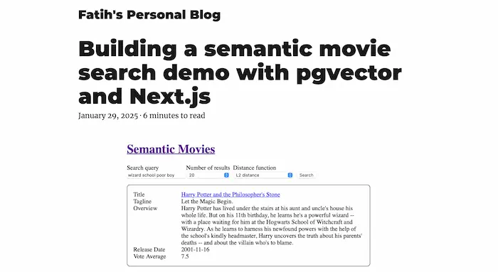
3、OpenMediaVault 与 TrueNAS Scale 的比较（英文）
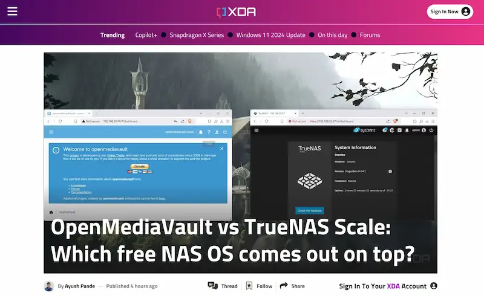
OpenMediaVault 与 TrueNAS Scale 是两个开源的 NAS（网络文件系统），需要自己搭建，本文对它们进行比较。
4、同一个 GitHub 用户如何用不同身份 SSH 登录（英文）
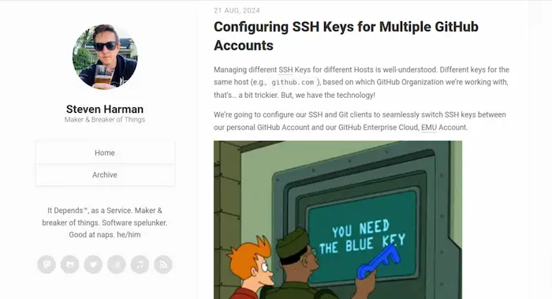
有时，同一个 GitHub 用户使用不同的 SSH 密钥，去登录不同的仓库。本文教你这时怎么写 SSH 配置文件。
5、浏览器内置书签是最好的书签系统（英文）
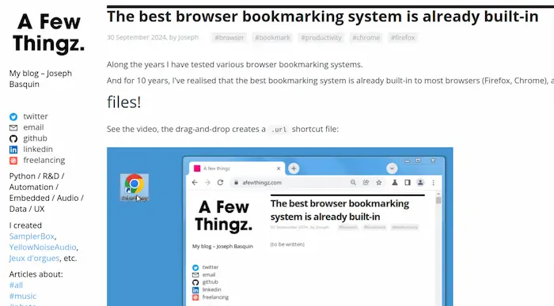
作者认为，浏览器内置的书签系统，是最好用的保存网址的方法。
6、为什么 TCP 需要三次握手（英文）
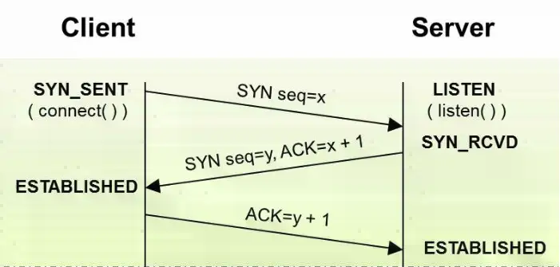
建立 TCP 连接需要双方的三次通信，本文详细解释这个连接过程。
7、我从中国进口迷你电动挖掘机（英文）
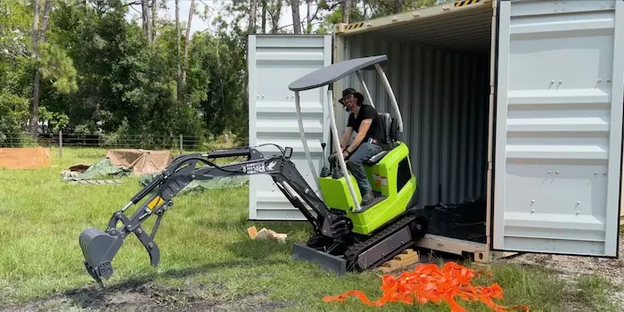
作者是美国人，介绍他新近的一门生意，将中国的迷你电动挖掘机进口到美国来卖。这种挖掘机真的很像大玩具。
工具
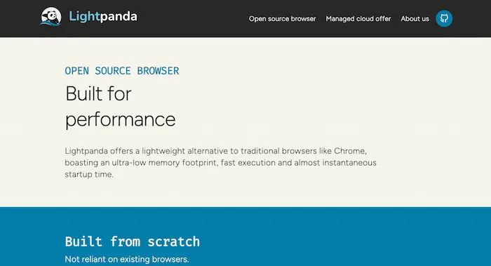
轻量级的无头浏览器，可以接入 Playwright / Puppeteer，占用资源和执行速度号称是 Chrome 的十分之一。
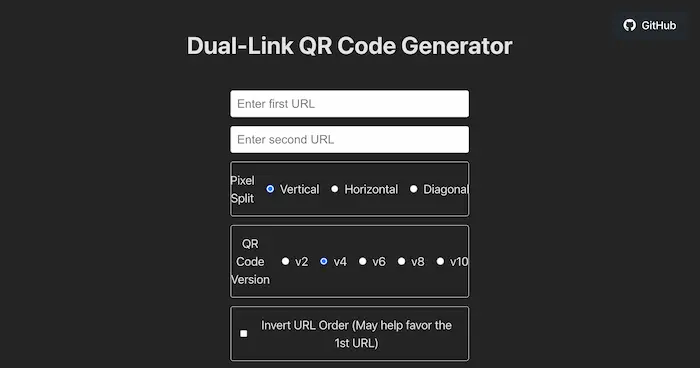
生成包含两个 URL 的二维码，不同角度扫描，返回的 URL 不一样，代码开源。
3、isd

用户友好的 systemd 操作工具，会提供命令行菜单供选择，参见教程。
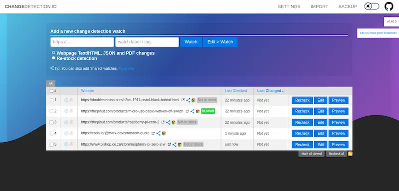
一个开源的服务，用来检测指定网页的某个部分是否发生变化。比如，网页上面的商品价格发生变化，它就会通知你。
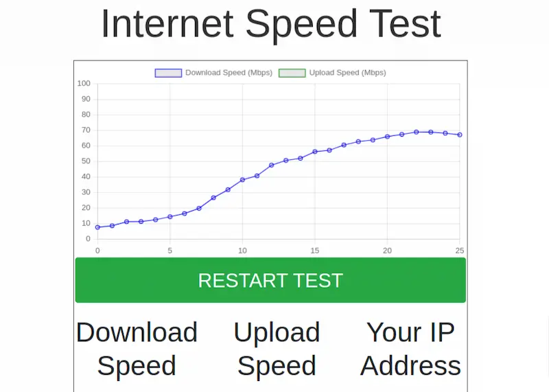
一个在线测试网速的网站。
6、在线焰火模拟器
网页模拟焰火绽放的效果。（@wincatcher 投稿）
一个开源的浏览器插件，一键发布内容到多个平台（知乎、微博、小红书、抖音、推特、脸书等）。（@tymon42 投稿）
8、生财有迹
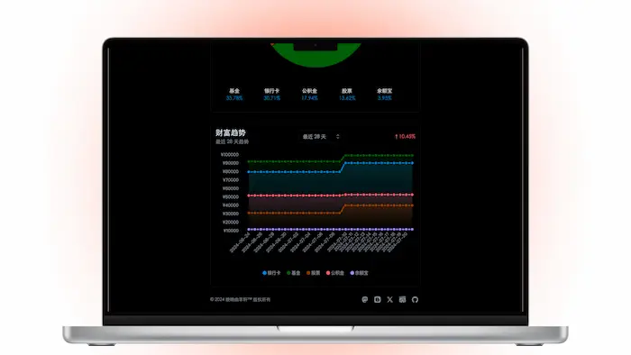
开源的 Web 应用，用于个人资产分析。（@nicejade 投稿）
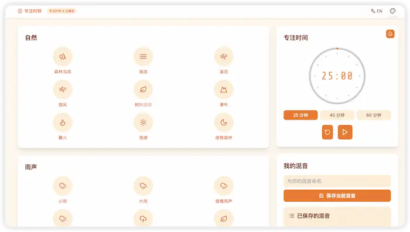
开源的自然声音和白噪音应用。（@daijinhai 投稿）
10、MacVimSwitch
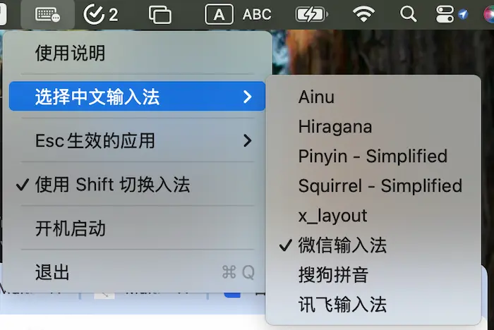
开源的 Mac 电脑中英文输入法切换工具，可以定制切换键和生效的应用。（@Jackiexiao 投稿）
AI 相关
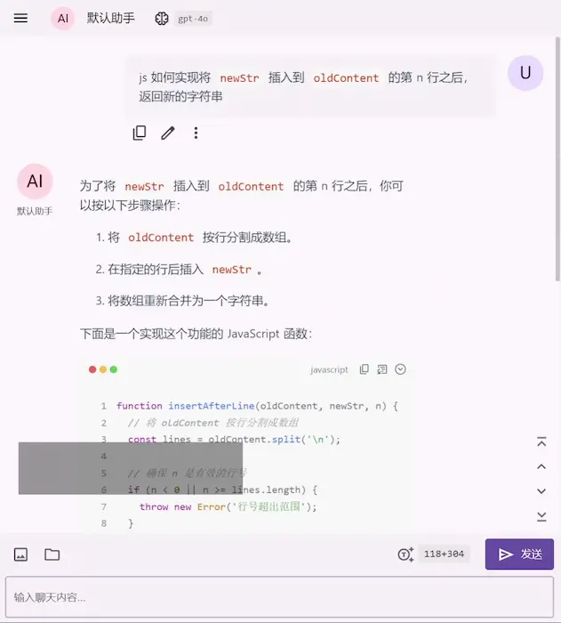
开源的全功能 AI 大模型客户端，自带 Web UI。（@NitroRCr 投稿）
一个 Go 语言程序，使用 AI 模型，将语音文件转成文字稿。
AI 语音工具，具有多种功能（语音识别、翻译、语音克隆、文本转语音），属于 Whisper 模型的 Web UI。
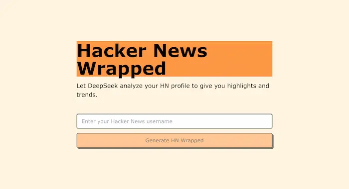
该网站可以输入一个 Hacker News 论坛的用户名，它会用 DeepSeek 模型总结该用户的特点，描述非常准确而且传神。
5、GenSFX
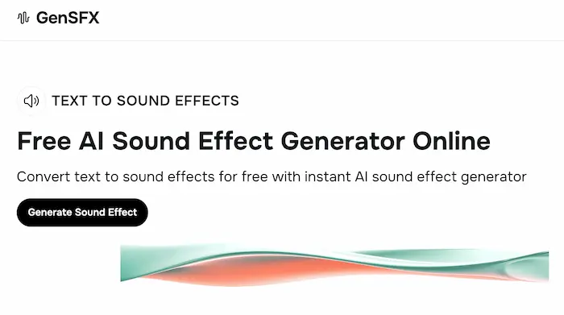
免费的 AI 音效生成网站。（@andylearnai 投稿）
6、福琪写春联
免费的 AI 春联生成工具。（@itfoxnet 投稿）
资源
这是一组系列文章，向初学者介绍如何配置 Arch Linux，要比官网 Wiki 简单易读。
2、Beej 的 Git 指南（Beej’s Guide to Git）
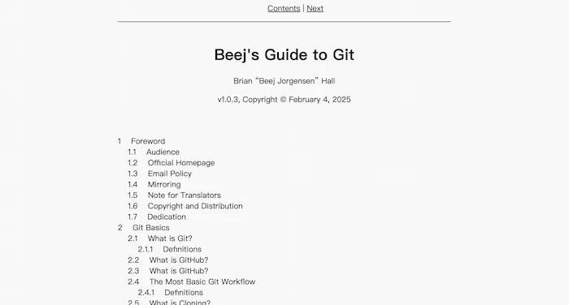
著名教程作者 Beej 的最新 Git 教程，基于他向大学学生的课堂讲义。
3、mandobot
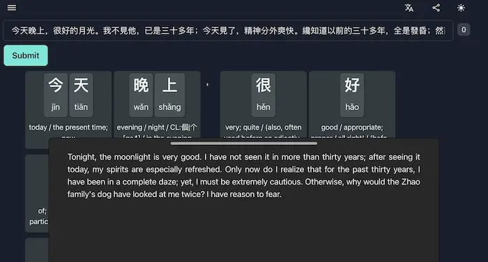
一个老外做了这个网站，它可以将中文文章进行分词，并逐一翻译成对应的英语单词，便于学习中文。
图片
1、新春 AI
vivo 手机发布了一个 ” 新春 AI 功能 “，将普通照片变成新春照片。
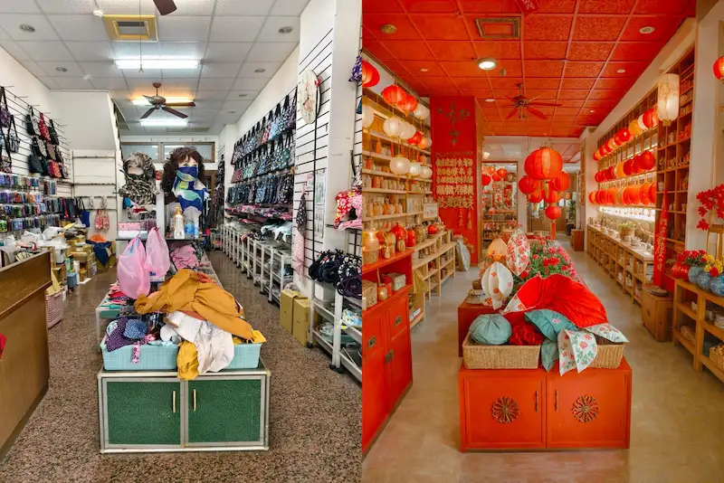
上图左侧是原始照片，右侧是 AI 将其变成新春装饰。
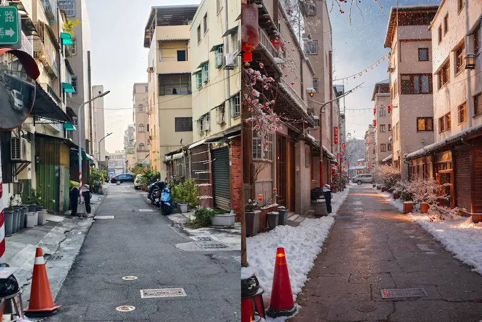

2、太阳能烟囱发电
现在的太阳能发电，都是使用光伏板，将光转为电能。
但是历史上，早期的太阳能发电使用的是烟囱。
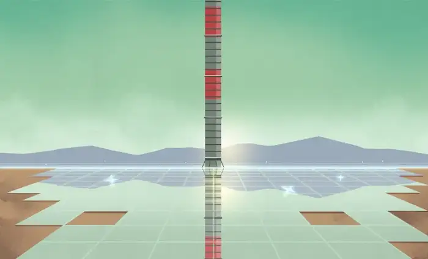
它的原理是热空气上升，只要我们用太阳能加热空气，使空气通过烟囱上升，再在烟囱底部装一个涡轮机，就能让空气带动涡轮机发电。
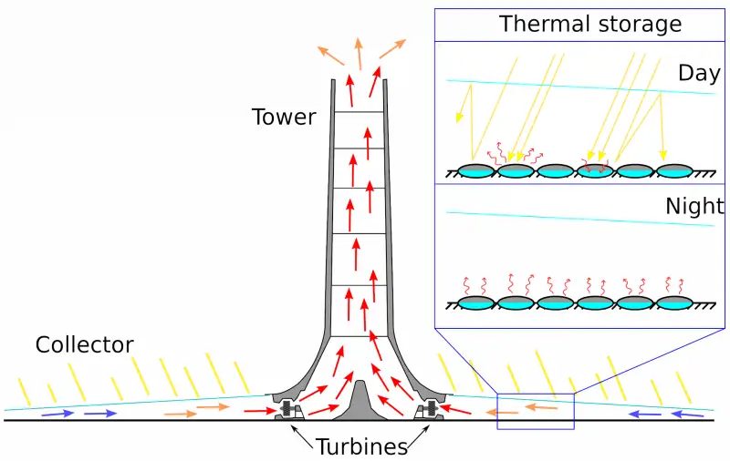
1982 年，西班牙就建造了这样一个太阳能烟囱，高达 194 米，周围直径 244 米范围内都是温室，用来收集热空气。
它的发电功率只有 50 kW，最终运行了 7 年，1989 年因暴风雨倒塌。
太阳能烟囱的缺点主要是，发电效率不大，需要巨大的占地面积，以及建造一个高耸的塔。所以，等到光伏板出现，它就被淘汰了。
文摘
我长期使用 AI，靠它帮助编程，已经不能在没有 AI 帮助的情况下解决问题了。
我不再阅读文档。既然 AI 可以立即解释一切，为什么还要费心阅读呢？
我的调试技能日益生疏。我甚至不再阅读报错消息，只是把它们复制并粘贴到 AI，让 AI 解读。
我已经成为了一个人肉剪贴板，仅仅是代码和 AI 之间的中介。
以前，每条报错都会让我学到一些东西。现在呢？AI 提供了解决方案，我却什么也没学到。实时答案带来的多巴胺刺激，取代了真正理解的满足感。
另一个受到影响的地方是深度理解。以前，我花费数小时来理解某个解决方案为何有效，现在，我只是照着 AI 建议实施。如果这些建议不起作用，我会改进提示的上下文，再次询问 AI。这种循环使得我对 AI 的依赖性不断增加。
我的情绪也受到影响。以前，解决新问题是编程乐趣的一部分。现在，如果 AI 不能在五分钟内给出解决方案，我就会感到沮丧。
我该怎么办？我不想采取任何激进的措施，比如完全放弃 AI，这是不现实的。我打算每周实行一天 ” 无 AI 日 ”。
我的感觉是，AI 不会让我们成为 10 倍效率的程序员，只会让我们对它的依赖程度增加 10 倍。
每当我们让 AI 解决我们自己可以解决的问题时，我们就是用短期生产力换取长期理解，我们以牺牲明天的能力为代价来完成今天的效率。
我并不是建议放弃 AI，只是建议大家不要放弃尝试独立解决问题。
我们正在创造 AI 一代程序员，他们可以向 AI 提出正确的问题，但不理解 AI 给出的答案。每次 AI 出现故障，他们就会显得无助。到目前为止，AI 还不足以完全取代程序员，但随着 AI 的进步，这种情况只会变得更糟。
言论
1、
DeepSeek 的成本比 Sonnet 低 15 倍。OpenAI 和微软最在乎的事情，莫过于阻止 DeepSeek 以这个价格提供服务。
OpenAI 和 Anthropic 现在的收费如此之高，它们靠这些钱来支持高薪和研发费用。而 DeepSeek 是开源的，免费提供权重，任何公司都可以用它提供服务，唯一的成本只是硬件和支持人员。
2、
就算 DeepSeek 明天就消失，但因为它是开源的，它已经进入了全球科技的血液，成为了 AI 行业的一个成本锚。
从此，AI 行业没有垄断的护城河来保证利润，AI 大模型失去了稀缺价值。
3、
我从未想到会被公司解雇，因为我的表现总是高于公司的期望。
后来我明白了。在裁员期间，你是谁、你做什么似乎并不重要，在大多数情况下，裁员的决定是由那些不认识你的人做出的。
对公司来说，我只是 Excel 表格中的一行。
— 《裁员改变了我》
4、
现在的苹果公司，很善于延长单一产品的寿命，但是很少表现出一些疯狂的想法。乔布斯离去的一大损失，就是苹果公司不再做很多奇怪的事情了。
— Asianometry，著名 Youtuber
5、
我们越忙碌，就越能敏锐地感受到自己在生活，对生活也就越有想法。
---- 康德，德国哲学家
往年回顾
宽容从何而来（#289）
未来两种人会增加（#239）
下一个内卷的行业（#189）
生物学的可怕进展（#139）
（完）
文档信息
- 版权声明：自由转载 - 非商用 - 非衍生 - 保持署名（创意共享3.0许可证）
- 发表日期： 2025 年 2 月 7 日